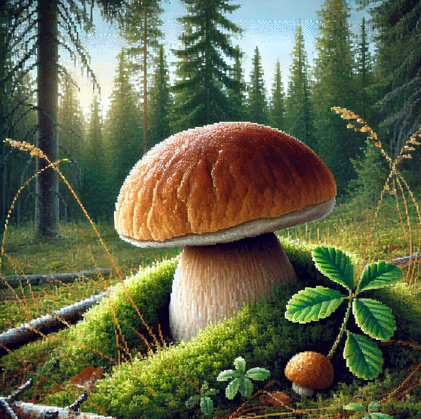
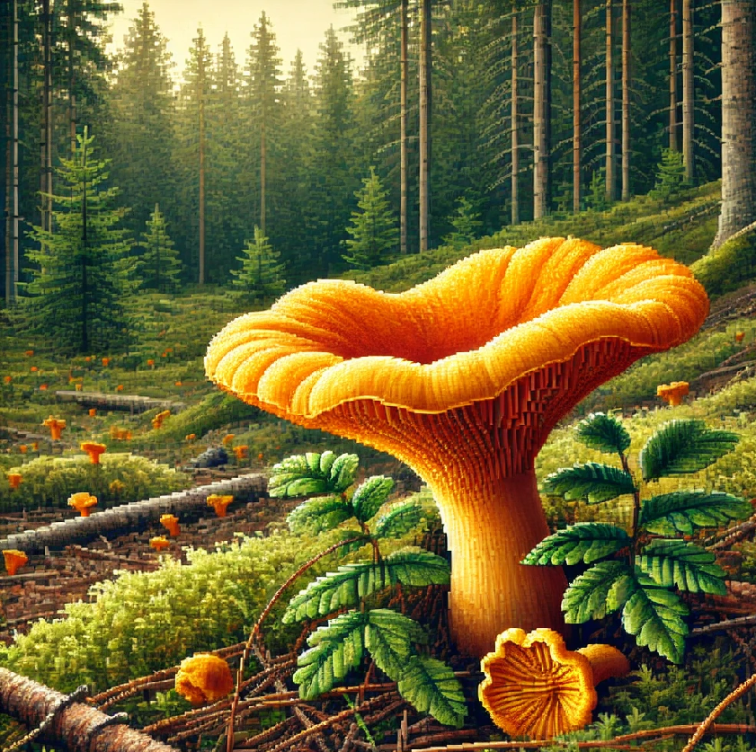
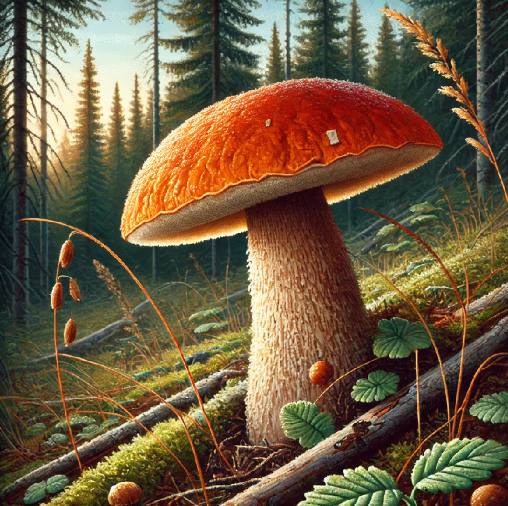
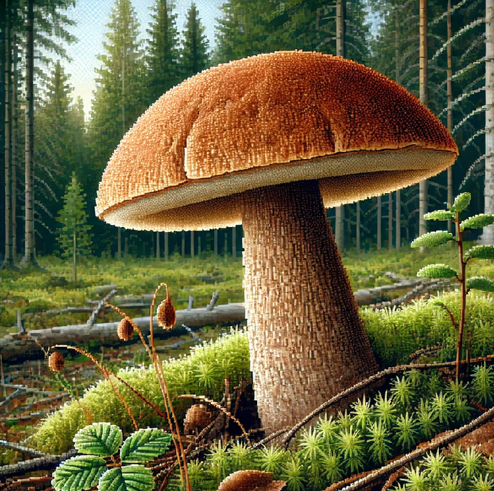

 |
|  |
|  |
|  |
Белый гриб
Белый гриб - это крупный и крепкий плотный гриб, поверхность шляпки которого может быть разных оттенков коричневого цвета и во влажном состоянии несколько липкая на ощупь. Споры гриба узкие, у молодых грибов они светло-серого цвета, у более зрелых - желто-зеленые. Мякоть гриба плотная и устойчиво белая. Белый гриб относится к съедобным грибам первой категории, то есть он хорошо усваивается организмом человека. В белых грибах много калия (полезен для сердечно-сосудистой системы), лецитина (для здоровья сосудов), витамина D, витаминов группы В (в том числе рибофлавина, необходимого для щитовидной железы), С и Е, а также каротина (полезен для глаз и кожи).
Лисичка
Лисичка - гриб с самой яркой и запоминающейся внешностью. Шляпка и ножка составляют одно целое, цвет от светло-желтого до желто-оранжевого цвета. Шляпка вогнутая, воронкообразной формы, с волнистыми краями, от 2 до 12 см. Ножка плотная и гладкая, длиной от 4 до 7 см. Мякоть представляет собой настоящую кладезь целебных веществ, отличаясь большим содержанием содержанием макроэлементов (калий, магний, кальций и др.), микроэлементов (железо. Цинк, марганец и др.), витаминов А, Д2, РР, С, В. Лисички обладают свойством выводить из организма человека радионуклиды и соли тяжелых металлов, в том числе стронция. Поэтому эти грибы — отличный продукт для борьбы с воспалениями и профилактики онкологических заболеваний.
Подосиновики
Подосиновики отличаются оранжево-красной (иногда белой) шляпкой и посинением мякоти гриба на срезе. От подберёзовиков также отличаются обычно более толстой, «коренастой» ножкой и плотной мякотью шляпки. Подосиновики считаются одними из самых благородных грибов, а кулинары с удовольствием готовят их них суп, жарят и тушат со сметаной, маринуют и солят. Подосиновики содержат значительное количество незаменимых для человека аминокислот, которые усваиваются организмом на 80%. Этим полезным свойством грибные белки похожи на животные, поэтому бульон из молодых подосиновиков заслуженно сравнивают с мясным бульоном.
Подберезовик
У подберезовиков крупная шляпка диаметром 5-15 см различной окраски – от белого до коричневого и его оттенков. Ее цвет зависит от условий произрастания. Мякоть белая с приятным грибным ароматом. Всего в мире насчитывается около 40 разновидностей подберезовика. Встретить эти грибы можно в березовых рощах, нередко произрастают они и в лесах смешанного типа, со второй половины июня по конец октября. Все подберезовики относятся к съедобным грибам и лишь незначительно различаются по пищевым качествам. Они являются малокалорийным продуктом и подходят для диетического питания. В составе имеются необходимые микроэлементы, которые благотворно влияют на нервную систему, выводят токсины из организма и регулируют сахар в крови.